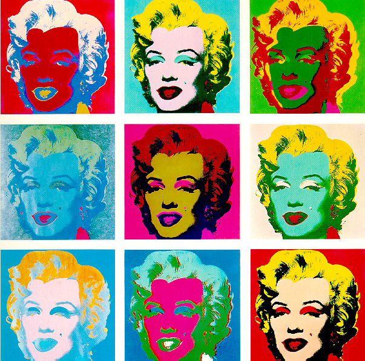

POP ART
Edito
Le Pop Art s'est affirmée au milieu des années 50, en Grande-Bretagne et aux USA, comme un des mouvements principaux du 20' siécle. Le Pop Art utilise des thémes populaires, tels que la publicité, la bande dessinée. Tout en s'opposant à culture élétiste, ce mouvement souhaite montrer la contiguité avec les beaux arts. Pour l'Anglettere, le mouvement est née suites à l'arriver de la culture américaine vue de loin. Alors que les artiste amériquain, eux, s'inspirer des expériances vécu. Le Pop art dans certains des ses aspect ressemble à l'exprésionisme abstrait, avec sa croyance dans les différentes possibilitées de l'art (comme le dessin à grande échelle). Par son oposition au dadaïsme, le pop art s'oppose au impultions destructives, satiriques et anarchique de ce mouvement.
Le Pop art Américain Différents artistes se sont démarqués. Pour les USA, on pensara à Andy Warhol, mais également Roy Lichtenstein. Ils ont tout deux exposée à New York. Grace à un renouveau dans la publicitée américaine, le Pop Art américain à connu sa plus grande pulsation dans les année 60. Grace à ce renouveau de la publicité les artistes ont du travailliée plus en profondeurs leurs traveaux. Le Pop Art britanique. Plus axées sur les sentiments, des traits romentiques, ou humoristique. Il se distinguée des artistes américains. Ayant une vue plus éloignée sur la culture populaires américaine.
Andy Warhold

Andy Warhold est une légende du pop art. Nous connaissons tous ses oeuvres, notament la célèbre peinture Marilyn Monero. A. Warhold est né le 6 août 1928 et décedé le 22 février 1987. Son véritable nom était en fait Andrew Warhola.C'est au cours des années 1960 que Warhol a commencé à faire des peintures iconiques de produits américains.
Source : http://www.le-pop-art.com
Tableau de Marilyn

10 Marilyns , série de dix portraits à l'effigie de l'actrice Marilyn Monroe, créés entre 1963 et 1967. Ces tableaux basés sur une photo publicitaire du film "Niagara", ont été réalisé en utilisant la sérigraphie, qui permet d'imprimer un sujet de façon répétitive. Andy Warhol, à la fois amoureux de Marilyn Monroe et fasciné par la mort, a débuté cette série peu de temps après le décès de l'actrice. Par exemple pour Orange Marylin, Warhol utilise donc l'image d'une femme déjà mythifiée, après son décès. Ici, il accentue dans Marylin ce qui en fait l'image de la pin up : les lèvres, le "maquillage" un peu vulgaire des yeux, la blondeur.
Sources : http://www.biographie-peintre-analyse.com/2012/09/26/andy-warhol-marilyn-1964-analyse-d-oeuvre/
Jack Teagle
Les côtés du bien et du mal sont tous venus ensemble pour la séance photo de Jack Teagle. Cette collection de pop art peinte de personnages connus est vraiment cool ! On peu y trouver Batman, Spiderman, Dark Vador, les Power Rangers et plein d'autre.
Source : rampagedreality
popart chinois
Dans quelques jours se tiendra à Pékin le troisième plénum du 18e congrès du Parti communiste chinois. Lors de ce grand raout qui ne sent pas la détente, le nouveau gouvernement dévoilera l’axe de sa future politique économique. Les chefs de l’état-parti n’évoqueront probablement pas le Shanzhai. L’art de la contrefaçon, un capital anarchique très chinois qui parasite les maisons de luxe et les sociétés de high-tech (parmi les plus touchées), est difficilement «assumable» officiellement. Shanzhai, ce terme aux contours flous, désigne le faux sans faire seulement référence à la pâle copie d’un original bien étudié (1). Il s’agit aussi de réinterprétations plus ou moins fidèles, de détournement de logos touchant des domaines aussi divers que le design, le vin, les stations essences, l’urbanisme ou les stars de la pop en vogue en Asie.